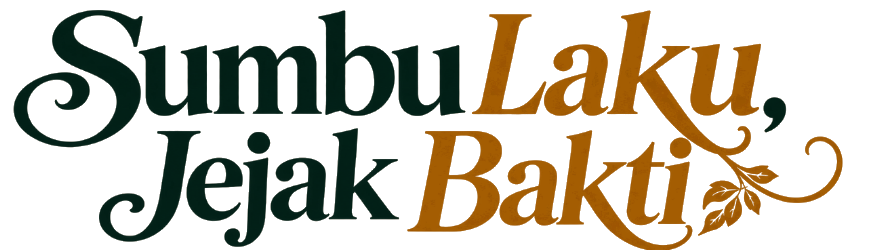
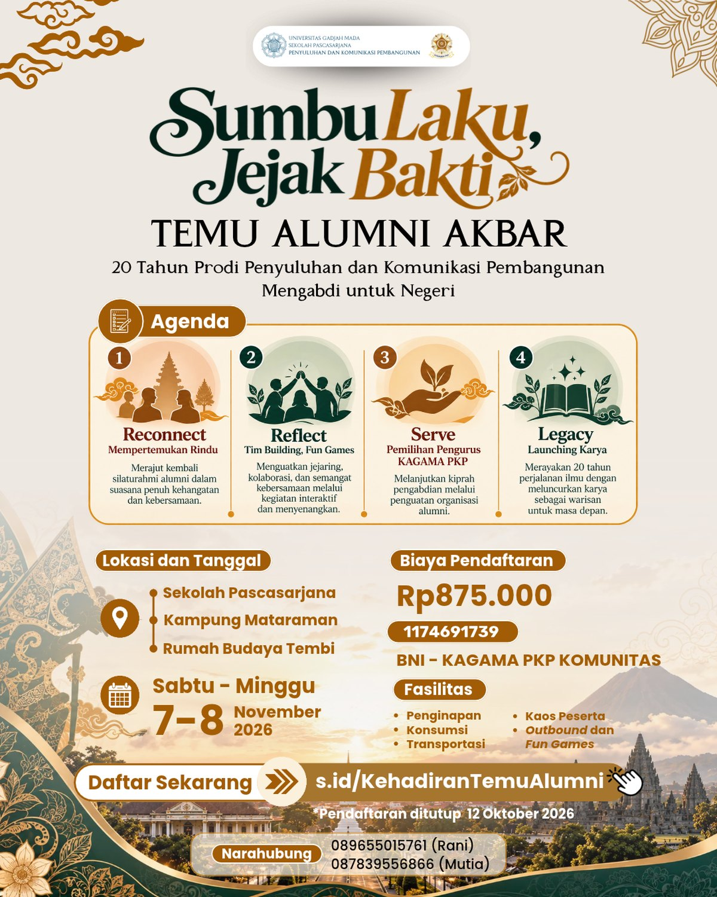

Sumbu Laku
Nilai keilmuan dan etika ke-UGM-an senantiasa menjadi poros panduan moral dan kompas dalam bertindak.

Gelar Karya Program Studi Penyuluhan & Komunikasi Pembangunan,
Sekolah Pascasarjana Universitas Gadjah Mada
Dualitas filosofis alumni PKP UGM — poros nilai yang memandu, dan jejak karya yang ditinggalkan.
Nilai keilmuan dan etika ke-UGM-an senantiasa menjadi poros panduan moral dan kompas dalam bertindak.
Rekam jejak kontribusi nyata dan karya pengabdian alumni bagi kemajuan masyarakat dan bangsa.
Merajut kembali simpul silaturahmi dan jejaring keakraban lintas angkatan S2 & S3.
Refleksi akademis atas sumbangsih disiplin ilmu PKP di era dinamika sosial global.
Meneguhkan dedikasi pengabdian alumni dan pelantikan pengurus KAGAMA PKP.
Mewariskan karya intelektual dan meluncurkan karya alumni sebagai warisan.
Susunan lengkap kegiatan Temu Alumni, 7–8 November 2026.
Registrasi · Pelantikan KAGAMA PKP · Gelar Wicara
Jl. Teknika Utara, Pogung, Sleman, D.I. Yogyakarta
Buka di Google Maps →Gala Dinner · Potong Tumpeng · Ramah Tamah
Jl. Ringroad Selatan, Panggungharjo, Sewon, Bantul
Buka di Google Maps →Penginapan · Outbound Fun Games · Alumni Awards
Jl. Parangtritis Km 8.5, Tembi, Timbulharjo, Sewon, Bantul
Buka di Google Maps →
Panduan resmi peserta: rundown lengkap, venue, dan informasi selama acara.
Arahkan kamera HP ke kode ini untuk membuka Galeri Karya Alumni dan memberi reaksi (❤️ 👍 👏 🔥 💡) pada karya favoritmu.
Buka Galeri Karya →